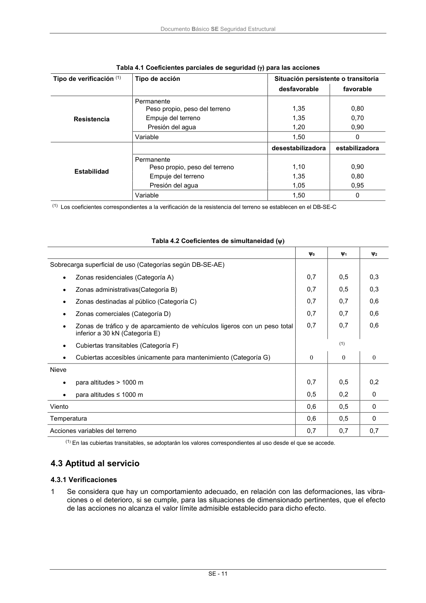

DB-SE Seguridad estructural · edición 2019-12-20 · capa oficial
Documento DB-SE-oficial · SHA-256 del PDF ec1fbfc51b28c4d62667aec480585b76fe31727ccf1615015a5d2d2677763f8f
Página física 17 de 45.
Copia fiel del PDF fuente · Fuente oficial
Ficha de la disposición en la fuente oficial
Formato: Texto de la página (Markdown)
Documento Básico SE Seguridad Estructural
SE - 11
Tabla 4.1 Coeficientes parciales de seguridad () para las acciones
Tipo de verificación (1)
Tipo de acción
Situación persistente o transitoria
desfavorable
favorable
Resistencia
Permanente
Peso propio, peso del terreno
1,35
0,80
Empuje del terreno
1,35
0,70
Presión del agua
1,20
0,90
Variable
1,50
0
Estabilidad
desestabilizadora
estabilizadora
Permanente
Peso propio, peso del terreno
1,10
0,90
Empuje del terreno
1,35
0,80
Presión del agua
1,05
0,95
Variable
1,50
0
(1) Los coeficientes correspondientes a la verificación de la resistencia del terreno se establecen en el DB-SE-C
Tabla 4.2 Coeficientes de simultaneidad (
0
1
2
Sobrecarga superficial de uso (Categorías según DB-SE-AE)
Zonas residenciales (Categoría A)
0,7
0,5
0,3
Zonas administrativas(Categoría B)
0,7
0,5
0,3
Zonas destinadas al público (Categoría C)
0,7
0,7
0,6
Zonas comerciales (Categoría D)
0,7
0,7
0,6
Zonas de tráfico y de aparcamiento de vehículos ligeros con un peso total
inferior a 30 kN (Categoría E)
0,7
0,7
0,6
Cubiertas transitables (Categoría F)
(1)
Cubiertas accesibles únicamente para mantenimiento (Categoría G)
Nieve
para altitudes > 1000 m
0,7
0,5
0,2
para altitudes ≤ 1000 m
0,5
0,2
0
Viento
0,6
0,5
0
Temperatura
0,6
0,5
0
Acciones variables del terreno
0,7
0,7
0,7
(1) En las cubiertas transitables, se adoptarán los valores correspondientes al uso desde el que se accede.
4.3 Aptitud al servicio
4.3.1 Verificaciones
1
Se considera que hay un comportamiento adecuado, en relación con las deformaciones, las vibra-
ciones o el deterioro, si se cumple, para las situaciones de dimensionado pertinentes, que el efecto
de las acciones no alcanza el valor límite admisible establecido para dicho efecto.

Datos candidatos: compruebe celdas y notas en el PDF.